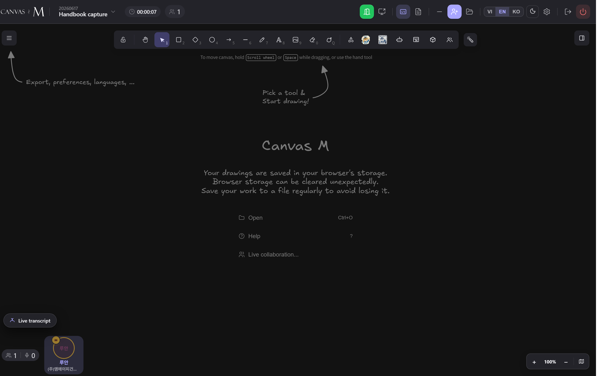

Joining a meeting
Every meeting in Canvas M is reached the same way: you sign in, you pick the meeting from your list, and the app routes you to whichever door is open for you. This chapter walks the whole path — from the meeting list, through the waiting screens, to the moment your microphone goes live.
One button, three doors
Joining is always login-first. There is no anonymous room URL to paste — access is by explicit invitation, and the server checks who you are before it hands back the room key. So the journey always starts the same way: sign in, find the meeting, press Join. What happens next depends on the meeting's state, not on anything you click.
Press Join on a meeting and Canvas M sends you down exactly one of three paths. If the meeting is live and you are internal staff, you go straight onto the canvas. If it is scheduled and has not started, you land on a “Meeting hasn't started yet” waiting screen until the host presses Start. If you are an external guest, you may land in a waiting room and knock to be let in. You never choose the door — the app picks it from the meeting's status and your role.
There is no room link to share. You join meetings you were invited to — nothing else opens.
Joining a call never asks for your microphone up front. You enter listening-only, and the browser's mic permission prompt fires later — the first time you unmute or turn on captions.
From the home screen to the room
- Sign in. Internal staff land on the project home; external guests land on a single-column list titled “Your meetings with MAP”.
- Locate the meeting. Guests see two sections — “Happening now / Upcoming” and “Finished”; staff open a project to see its meetings.
- Press Join on a live or upcoming meeting. (A finished meeting shows Review instead — read-only.)
- Wait a moment while Canvas M resolves the room and connects — the canvas takes over the screen.
- If you left a meeting open earlier, use the Resume meeting banner near the top of the home screen to drop straight back in.
→ The lobby disappears and the live meeting canvas fills the screen. You are in the meeting — but not yet in the audio/video call (that is a separate, deliberate step covered later).
If your meeting isn't listed, you haven't been invited yet. Guests see the empty-state line “No meetings yet — MAP will add you here.” Ask the organizer to add you; there is no link you can paste to get in.
Starting, scheduling and inviting people are organizer/host actions reached from the project view and the in-meeting Invite button. As a participant you only ever Join.
When the meeting hasn't started
A scheduled meeting you've opened early. You see “Meeting hasn't started yet”, the scheduled time, and a spinner reading “Waiting for the host to start the meeting…” The app polls every few seconds and drops you straight in the instant the host starts.
A terminal notice: “Meeting cancelled” with “The organizer cancelled this meeting.” There is no way forward — use Back to home.
Shown to guests if the meeting finished before they got in: “Meeting has ended” and “This meeting has ended. The organizer will share a recap with you separately.”
You'll see one of these whenever you open a meeting that isn't live yet. The waiting screen is patient — you can leave it open and it will auto-join you when the meeting goes live. Every state offers Back to home to return to your meeting list.
Knocking to be let in
- Press Join on a live meeting as an external guest. Canvas M knocks for you and shows a door-shaped card titled “Waiting to be let in”.
- Read the confirmation: the meeting name, “Joining as {your name}”, and a spinner reading “Waiting for the host to let you in…”
- Wait. The card checks your status automatically every few seconds — no need to refresh.
- When the host admits you, the screen connects you straight into the meeting, muted.
- If the host declines, you'll see “Not admitted” with “The host hasn't let you in right now. You can knock again in a moment.”
- Press Knock again to retry. There is a short cooldown, so wait a moment if it doesn't take immediately.
→ On admission you arrive in the meeting with your microphone off — nothing is broadcast until you choose to join the call and unmute.
Internal staff never see the waiting room — they're admitted automatically. The waiting room is only for external guests entering a live meeting. Use Back to home at any point to leave the queue.
Admitting and declining knocks is a host control, shown to the host as a “Waiting to join” section in the participants panel with Admit and Deny buttons.

- 1 Canvas M wordmark — the brand mark; tells you which app you're in.
- 2 Meeting title — the project name above the meeting name (or “Untitled meeting”). It's static text for you; only the organizer sees an edit chevron.
- 3 Elapsed timer — the clock icon shows time since the host started; tooltip “Meeting time elapsed.” Late joiners see the same shared time, not their own.
- 4 People count — the head-count in the room; a small mic badge shows how many are in the audio call. Click it to open the Participants panel.
- 5 Media group — join/leave the call, mic, camera, raise-hand, reactions and present sit here (covered next).
- 6 Captions & transcript — the Captions (CC) toggle and the Transcript button (with a live segment count).
- 7 Leave — the door/arrow icon, tooltip “Leave”: you exit the room; everyone else stays.
Being in the meeting vs. being in the call
Being on the canvas does not put you in the call. An open-door button (tooltip “Join”) sits in the media group. Press it to enter the call — listening-only, no mic prompt yet. While it connects you see a spinner, tooltip “Requesting mic permission…”
The cluster expands: Mic (Mute/Unmute), Camera (Turn on/off camera, off by default), Raise hand, Reactions (👍 ❤️ 😂 🎉 👏 😮) and Leave call (phone-down). Your first unmute is when the browser asks for the microphone.
A red mic-off button carries the reason in its tooltip and click retries: “Microphone denied…”, “Microphone is in use by another app…”, or “Couldn't join the call — check your network and try again.” No microphone at all shows “Listening” / “This device has no microphone — listen only.”
Join the call when you want to hear and speak. Leave call (phone-down) hangs up the audio/video only — you stay on the canvas. That is different from Leave in the header (you exit the meeting). Both are different again from the host's red End meeting.
The three “exit” verbs, and what each control says
| Control | Where | Label / tooltip | What it does |
|---|---|---|---|
| Join (call) | Media group, open-door icon | Join | Enters the audio/video call, listening-only — no mic prompt yet. |
| Mic | Media group | Mute / Unmute | Toggles your microphone. First unmute triggers the browser permission prompt. |
| Camera | Media group | Turn on camera / Turn off camera | Off by default; opt-in. Disabled with a reason if no camera is detected. |
| Raise hand | Media group | Raise hand / Lower hand | Signals the host; peers see your hand raised. |
| Reactions | Media group, smiley | Reactions | Fires a quick emoji (👍 ❤️ 😂 🎉 👏 😮) to the room. |
| Leave call | Media group, phone-down | Leave call | Hangs up audio/video; you stay on the canvas. |
| Leave | Far-right, door icon | Leave | You exit the meeting; everyone else stays in the room. |
| Back to home | Waiting screens | Back to home | Drops out of the waiting/start gate and returns to your meeting list. |
A red power icon (“End meeting”) appears only for the host/organizer/co-host and switches everyone to read-only review. As a participant you won't see it.
Common snags and how to clear them
My meeting isn't in the list — You haven't been invited, or the invite was revoked
Ask the organizer to add you. Guests see “No meetings yet — MAP will add you here.” — there's no link to paste in. → 2.2
Stuck on “Waiting for the host to start” — The meeting is scheduled and hasn't been started
Leave it open — it auto-joins the moment the host starts. Or press Back to home and try again later. → 2.3
“Not admitted” after knocking — The host declined or hasn't responded
Press Knock again; wait a moment if it doesn't take — there's a short cooldown. → 2.4
“Meeting cancelled” / “Meeting has ended” — The organizer cancelled or ended the meeting
These are terminal. The organizer shares a recap separately. Use Back to home. → 2.3
Red mic button — “Microphone denied” — Browser blocked mic access
Enable the mic in browser settings, then click the button to retry. → 2.5
“Microphone is in use by another app” — Teams / Zoom (or similar) holds the mic
Quit the other app, then click the red button to retry. → 2.5
“Couldn't join the call” — Network hiccup reaching the call server
Check your connection and click the red button to retry. → 2.5
“Listening” — mic is greyed out — No microphone on this device
Expected — you can still hear everyone. Join from a device with a mic to speak. → 2.5
The host removed me — A host removed you from the meeting
You'll see “The host removed you from the meeting.” Re-join only if you're still invited. → 2.4
Every call error button does double duty: the tooltip explains the problem and a single click retries. You rarely need to reload.